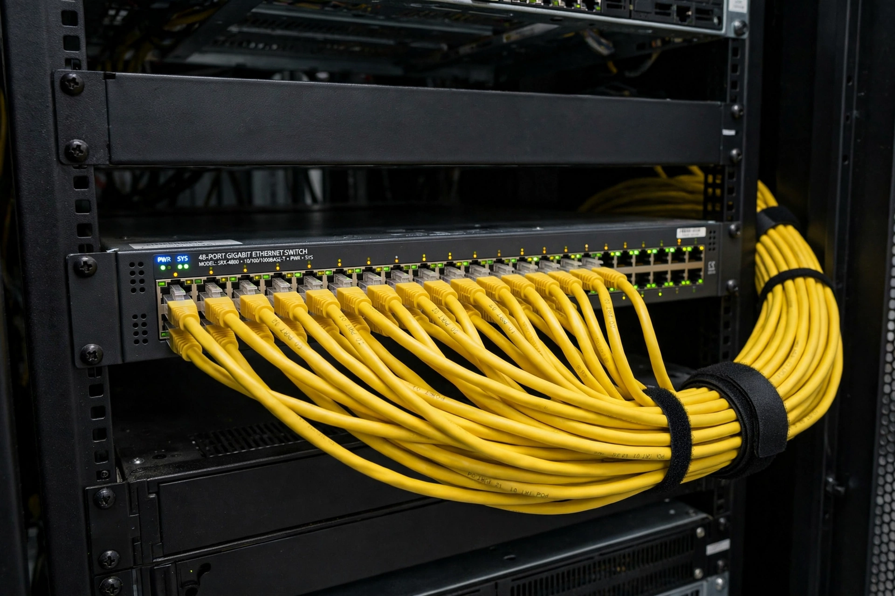

Ethernet
| Ethernet | |
|---|---|
| Invented | 1973–1974, Xerox PARC |
| Inventors | Robert Metcalfe, David Boggs |
| Standard | IEEE 802.3 |
| Typical speeds | 100 Mbit/s – 400 Gbit/s |

Photograph of yellow Ethernet cables plugged into a network switch
Ethernet is a family of wired computer networking technologies commonly used in local area networks (LANs), and also in metropolitan and wide area networks. It was commercialised in 1980 and first standardised in 1983 as IEEE 802.3, and has since become the dominant wired networking technology in homes, offices and data centres.
Ethernet was developed at Xerox PARC by Robert Metcalfe and David Boggs in 1973–1974, inspired by the ALOHAnet radio network; Metcalfe's memo sketching the idea is dated 22 May 1973, a day sometimes celebrated as Ethernet's birthday. The name comes from the 'luminiferous ether' once thought to carry light — here, the cable carrying signals to every station.
Evolution
Early Ethernet shared a single coaxial cable among all stations, using CSMA/CD to arbitrate collisions: a station listened before talking and backed off if two talked at once. Speeds climbed from the experimental 2.94 Mbit/s to 10 Mbit/s (1980s), 100 Mbit/s Fast Ethernet (1995), Gigabit Ethernet (1998) and 10, 40, 100 and 400 gigabit versions. Modern networks use twisted-pair or fibre cabling in a star topology centred on switches, which forward frames only to the destination port and have made collisions — and CSMA/CD — largely historical. Each Ethernet interface carries a globally unique 48-bit MAC address assigned by its manufacturer.